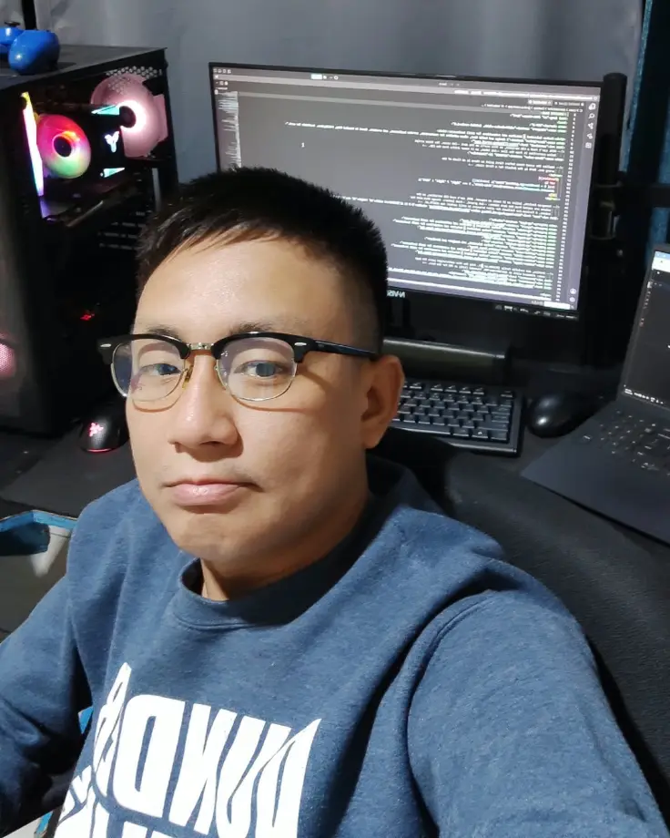
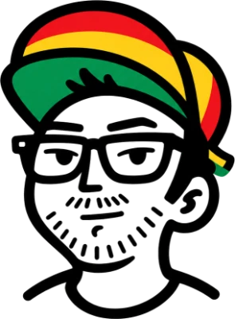

Websites and automationsfor small businesses.
Fast, clean sites for restaurants, service businesses, and creators — plus the automations that run behind them. Designed, built, and launched from Bacolod City, Philippines.
Available for new projects

Tools and platforms I work with
Selected work
Personal projects
About
I’m Joshua Jalandoni, a web designer and developer in Bacolod City, Philippines. I build websites and automations for small businesses — restaurants, service companies, and creators who need to look credible online and start getting calls.
I didn’t come to this from design school. I spent years in customer support for Capital One and American Express, moved into sales, and now work as a Claude Operator testing live AI systems for Lion Sales Funnels. That’s an unusual path for someone who builds websites, and it’s the reason I think about your site as a thing that has to work — bring in calls, answer the questions people actually ask — rather than a thing that has to look impressive.
Most of my work lately is automation: the systems that run quietly behind a business so the owner isn’t doing the same task by hand every week.
I work fair, and I’d rather do good work for the right people than chase everyone.
On the side I make animations and 3D models, mostly for fun.

I’d rather build something that gets you calls than something that wins awards.
- Websites
- Landing pages
- Automations
- Redesigns
- Data annotation
- Quality review
- Community management
Stack
Experience
Brands I’ve worked with
Certifications
certificates earned
Services
-
New website
A site built from scratch for a business that doesn’t have one, or has one that isn’t working. Menu, services, hours, contact — whatever your customers actually need to find.
-
Redesign
You have a site. It looks dated, it’s slow, or it doesn’t work on a phone. I rebuild it without losing what’s already working.
-
Automations
The repetitive work running your business that shouldn’t need a person doing it by hand every week.
-
Virtual assistance
Ongoing support for business owners who need an extra pair of hands — inbox, scheduling, data, and the admin work that piles up.
Let’s talk about your project
Tell me about your business and what you need the site to do. I’d rather get on a video call than trade emails — I’ll walk you through what I’d build and why, and you can decide from there.
Available for new projects
I usually reply within 24 hours
Bacolod City, PhilippinesRemote worldwide
Email me